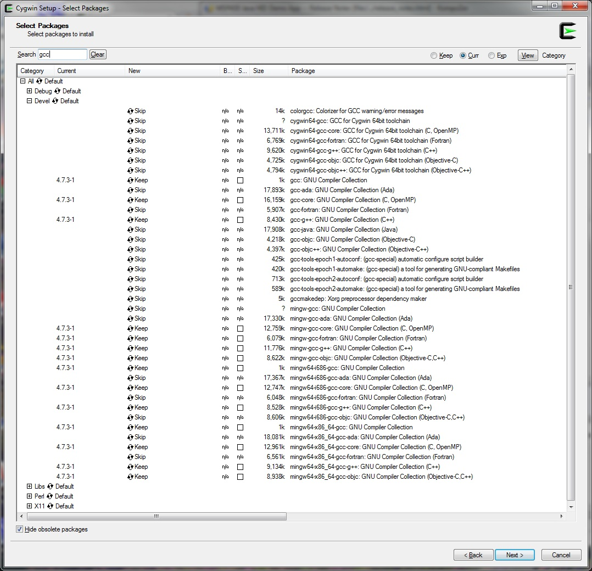
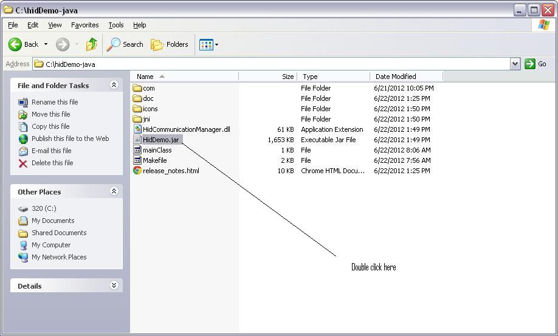

MSP430 Java HID Demo App -- Release Notes
Welcome to the MSP430 Java HID USB Demo App! This is an
example of a host-side HID application. It's designed to use the
HID-Datapipe format (see the Programmer's Guide for more information).
However, it could also be used for any custom HID device -- that is, an
HID device not driven directly by the OS, like a mouse/keyboard.
The project is composed
of a Java GUI and C drivers. The communication between Java
and the C
drivers is Java Native Interface (JNI) based. This means
there
is an accompanying DLL in the same path as the *.jar file that contains
the native calls.
This document is divided into the following sections:

The HID
Demo App can be run with any of the HID-Datapipe examples included in
the USB Developers Package. Please refer to the Examples Guide in the
Developers Package for usage information.
The Hid
Demo App be executed from a command line, by navigating to the
directory in
which this *.jar file is located, and type "java
-jar HidDemo.jar". The
HID
Demo App can can also be started by double-clicking on hidDemo-java.jar
(see file associations above). Double clicking assumes that
your
system, Java version, and path are configured correctly so it is
recommended to try command line execution first.

This should
bring up the HID Demo App. If it does not, check to ensure that a
Java Virtual Machine (JVM) is listed in your PC's path).
This
update builds with Cygwin and can build 32- and 64-bit
libraries. The project contains:
| com |
Top Level Java and Class files |
| doc |
Release Notes image files |
| icons |
User interface resources |
| jni |
C sources and library |
There is also a Makefile, at top level, for rebuilding the application
(*.jar
file and DLL). To rebuild, please see pre-requisites.
The HID Demo App was
developed only as an example, so you're encouraged to modify and update
it.
In order to do this, you will need the following software
installed:
The JDK may be
downloaded from:
http://www.oracle.com/technetwork/java/javase/downloads/index.html
Because of inherent limitations in the platform, it's best to not have
spaces in the JDK's path; for example, don't use the default of
"C:\Program Files\..." If
you use spaces, you will need to "escape" them in the Makefile.
C:\JDKX.xx.xx is a recommended directory format,
because it's short, and because you can create a soft link to it as
C:/jdk (under Cygwin).
After
the above pre-requisites are installed, modify the Makefile (in
hidDemo-java/Makefile) to add
the location of the JDK you have installed on your system.
If the compilers were installed correctly, the only changes that should
be needed are the JDK paths.
ifeq (${JDK64},1)
CC=x86_64-w64-mingw32-gcc-4.7.3
CXX=x86_64-w64-mingw32-g++
CCFLAGS=-m64
JDK="/cygdrive/c/jdk64"
else
CC=i686-pc-mingw32-gcc
CXX=i686-pc-mingw32-g++
CCFLAGS=-m32
JDK="/cygdrive/c/jdk32"
endif
The JDK paths should point to where your system's JDK is installed (the
JDK
directory right above bin/ that contains javah.exe).
The
final step is to open a cygwin window and run "make" (or
"make JDK64=1", for 64-bit build) for the /hidDemo-java directory (for
example,
/cygdrive/c:/ti/msp430/MSP430USBDevleopersPackage_x_xx_xx/hidDemo-java).
This release has been tested on Windows XP 32-bit and Windows 7 64-bit.
In cases where there is a mismatch in default JDK invoked by
double-clicking a *.jar file (file associations are incorrect), the
application
may not start. To work around this, at the command line run
"java -jar HidDemo.jar".
This is demo code, and therefore there is no versioning.
First check the
Examples Guide and MSP430 USB API Programmer's Guide in the USB
Developers Package for more information. If you still need support,
please
visit the MSP430
E2E forum.
or e-mail us directly at msp430ware@list.ti.com.